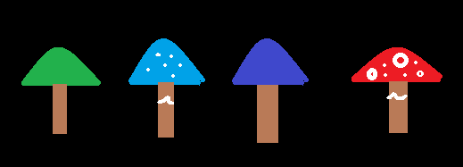

Nichts als Dunkelheit und Stille. Das ist alles, was du wahrnimmst, als du von einem unsanften Rütteln an deiner Schulter geweckt wirst. Deine Augenlider, schwer wie Blei; dein Körper, starr wie Eis. Du Erinnerst dich nicht, wie du zu diesem Ort gefunden haben könntest. Weißt nicht was gestern war, was morgen kommen mag. Zeit und Raum verschwimmen. Werden zu einem undurchsichtigen Nebel. Kurz bevor die Dunkelheit dich erneut mit sich zieht und du wieder in deinen komaartigen Schlaf verfällst, nimmst du das leise Ticken wahr, von dem du annimmst, dass es von einer Uhr kommt, die hinter dir platziert wurde. Um wach bleiben zu können, konzentrierst du dich ganz auf das leise Geräusch. Als du deine Augen endlich öffnen kannst, begegnest du dem neugierigen Blick eines seltsam wirkenden Mannes.
Du:
„Wo bin ich? Wer sind sie?... Was ist passiert?
Seltsamer Mann:
„Das startet ja gut. Dem durchschnittlichen Menschen scheint es noch mehr an Intelligenz zu mangeln, als ich bereits vermutet habe. Kannst du nicht erkennen, dass wir uns auf einem Raumschiff befinden?“
Du:
*siehst dich um und erkennst, dass es sich bei diesem Raum tatsächlich um ein Raumschiff handelt* „Das erklärt immer noch nicht, wer sie sind und warum ich hier bin.“
Seltsamer Mann:
„Ich bin Professor Rainer Zufall und habe dich auserwählt, mir bei einem Experiment zu helfen“
Du:
“Was für ein Experiment?“
Prof.Rainer Zufall:
„Ich habe bemerkt, dass die Menschheit immer dümmer und nutzloser wird. Um dem ein Ende zu setzen, habe ich in den letzten Jahren an einer Bombe gearbeitet, die mit nur einem Klick deine Spezies auslöscht und somit einige Probleme des Universums lösen würde. Da mir das aber etwas grob vorkam, habe ich die Bombe mit einem Timer verbunden. Wenn du innerhalb von einer Stunde alle Rätsel lösen kannst, um den Timer abzustellen, passiert nichts, und du hast die Intelligenz der Menschheit bewiesen. Ein gutes Gelingen wünsche ich dir.“
Professor Rainer Zufall verlässt den Raum. Während du ihm nachsiehst, bemerkst du, dass er kein normaler Mensch ist, sondern eher etwas Alienartiges an sich hat. Bevor du weiter darüber nachdenken kannst, hörst du ein Klicken an der Tür, er hat dich eingeschlossen. Dir bleibt nichts anderes übrig, als die Rätsel zu lösen.
_
_
_
_
_
1
2
3
4
5
6
7
8
9
0
entf.
ok
1.
11 = 3😀 - 🔷
🟥 = 😀 + 🔷
11 = 3🟢 - 🟥
1 = 2🔷 + 0,5🟢 + 😀
😀 + 🟢 + 🔷 + 🟥 =
Tipp: 🔷 ist negativ
2.
+1 Harry Potter und der Halbblutprinz
*2 Harry Potter und die Kammer des Schreckens
-3 Harry Potter und der Stein der Weisen
:2 Harry Potter und der Orden des Phoenix
+7 Harry Potter und der Gefangene von Askaban
+0 Harry Potter und die Heiligtümer des Todes
*4 Harry Potter und der Feuerkelch
Tipp: Punkt vor Strich
3.
DHMR
Tipp: Z=A ➡ A=B ➡ B=C ...
4.
Um die Theorie belegen zu können, dass die Menschen lieber ausgelöscht werden sollten, reist Prof. Rainer Zufall 7 Mal pro Jahr zur Erde. Da es auf seinem Raumschiff häufig an Süßigkeiten mangelt und der Professor kühle Erfrischungen liebt, kauft er sich bei jedem Besuch ein großes Eis mit 6 Kugeln. Dabei bevorzugt er die Geschmacksrichtungen Vanille, Schokolade, Erdbeere, Kirsche, Maracuja und Apfel. Um bei seinen Experimenten einen Fortschritt verzeichnen zu können, setzt der Professor sich nun 8 Stunden lang mit dem Verhalten von Menschen auseinander, indem er es sich auf einer Parkbank gemütlich macht und die vorbeiziehenden Passanten beobachtet. Nach einem 9-minütigen Spaziergang zu seinem Haus auf der Erde, ist der Professor erschöpft von seinem langen Tag und legt sich schnellstmöglich ins Bett, um seine 8 Stunden Schlaf erreichen zu können. Am nächsten Tag ist seine Studie über menschliches Verhalten dann so weit fortgeschritten, dass er den 10-stündigen Rückflug antreten kann.
Tipp: ∅
5.
Kobolt:
Ich esse alle Pilze mit Punkten!
Zauberer:
Alle Kobolde lügen!
Fee:
Pilze mit Punkten sind giftig!
Drache:
Ich vertraue dem Zauberer und würde keine blauen Pilze essen!

Tipp: essbar | giftig | giftig | giftig
Der Timer ist abgelaufen. Du hörst Schritte auf dem Flur, Professor Rainer Zufall kommt zurück! Du versuchst die letzten Rätsel zu lösen, gibt es nicht irgendeinen Ausweg? Doch es ist zu spät. Prof. Rainer Zufall sieht dich bei deinen letzten Versuchen, dem Unglück ein Ende zu bereiten und grinst verachtend.
Prof. Rainer Zufall:
„Verschwende deine letzten Minuten nicht mit Gegebenheiten, die nicht mehr zu verändern sind. - Mein kleiner Freund, deine Zeit ist abgelaufen.“
Du:
„Bitte geben sie mir noch eine letzte Chance. Ich werde alles in meiner Machtstehende tun, um das Schicksal der Menschheit zu ändern.“
Prof. Rainer Zufall:
„Netter Versuch, aber dazu wird es nicht mehr kommen. Deine erste Chance soll auch deine letzte gewesen sein.“
Bevor du noch etwas erwidern kannst, holt der Professor einen Knopf aus seiner Manteltasche und hält ihn für einige Sekunden gedrückt. Du schaust aus dem Fenster des Raumschiffs, und die Erde explodiert vor deinen Augen. Bald wird es sein, als wäre sie nie da gewesen. Du fühlst einen tiefen Schmerz. Das Letzte, was du siehst, als du dich umdrehst, ist eine Spritze in deinem Arm. Danach wird es dunkel und es bleibt dunkel - für immer.
Alle Rätsel sind gelöst! Erleichtert stellst du den Timer aus. Gerade als du anfängst dich zu fragen, wie es jetzt wohl weitergehen mag, betritt Prof. Rainer Zufall den Raum und schaut überrascht zum Timer.
Prof Rainer Zufall:
„Erstaunlich! Ich hätte nicht erwartet, dass der Mensch zu so Etwas fähig ist. Schade, dass mir somit die Gelegenheit entgeht, meine Bombe auszutesten, das Ende der Erde wäre ein schöner Anblick von hier aus gewesen.“
Du:
„In Ordnung, aber können sie mich nun endlich zurück nach Hause bringen?“
Prof. Rainer Zufall:
„Nur die Ruhe mein Freund, *er zieht eine Pille aus seiner Manteltasche* wenn du diese Pille schluckst, wirst du bald Zuhause sein.“
Du:
„Woher weiß ich, dass ich ihnen vertrauen kann?“
Prof. Rainer Zufall:
„Ganz einfach, du hast keine andere Wahl.“
Nach kurzem Überlegen und abwägen der Möglichkeiten beschließt du, dass du ihm Recht geben musst. Deine einzige Chance ist es, all dein Vertrauen in die Pille zu legen. Nachdem du die Pille geschluckt hast, verschwimmt die Welt um dich herum. Ein Gefühl der Erleichterung überkommt dich. Als du das nächste Mal erwachst, fühlst du dich seltsam geborgen. Du schlägst die Augen auf und stellst fest, dass du dich in deinem Bett befindest. Obwohl der Gedanke naheliegt, bist du dir sicher, dass es sich hierbei nicht um einen Traum gehandelt haben kann und bist erleichtert, dass du die Menschheit retten konntest.